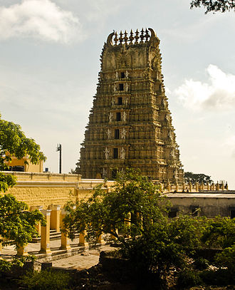

1. Mysore is situated at the foothills of Chamundi Hills about 145 km (90.1 mi) towards the southwest of Bangalore and spread across an area of 152.05 km2 (59 sq mi).[9] Mysore City Corporation is responsible for the civic administration of the city, which is also the headquarters of Mysore district and Mysore division.
It served as the capital city of the Kingdom of Mysore for nearly six centuries from 1399 until 1956. The Kingdom was ruled by the Wadiyar dynasty, with a brief period of interregnum in the late 18th century when Hyder Ali and Tipu Sultan were in power. The Wadiyars were patrons of art and culture. Tipu Sultan and Hyder Ali also contributed significantly to the cultural and economic growth of the city and the state by planting mulberry trees introducing silk in the region and fighting four wars against the British. The cultural ambience and achievements of Mysore earned it the sobriquet of Cultural Capital of Karnataka.

2. The site where Mysore Palace now stands was occupied by a village named Puragere at the beginning of the 16th century.[18]: 281 The Mahishūru Fort was constructed in 1524 by Chamaraja Wodeyar III (1513–1553),[18]: 257 who passed on the dominion of Puragere to his son Chamaraja Wodeyar IV (1572–1576). Since the 16th century, the name of Mahishūru has commonly been used to denote the city.[19]: 31 The Kingdom of Mysore, governed by the Wodeyar family, initially served as a vassal state of the Vijayanagara Empire. With the decline of that empire after the Battle of Talikota in 1565, the Mysore Kingdom gradually achieved independence, and by the time of King Narasaraja Wodeyar (1637), it had become a sovereign state.[20]: 228 Seringapatam, near Mysore, the present-day Srirangapatna, was the capital of the kingdom beginning in 1610.[18]: 257 The 17th century saw a steady expansion of its territory and, under Narasaraja Wodeyar I and Chikka Devaraja Wodeyar, the kingdom annexed large areas of what is now southern Karnataka and parts of Tamil Nadu, to become a powerful state in the southern Deccan.